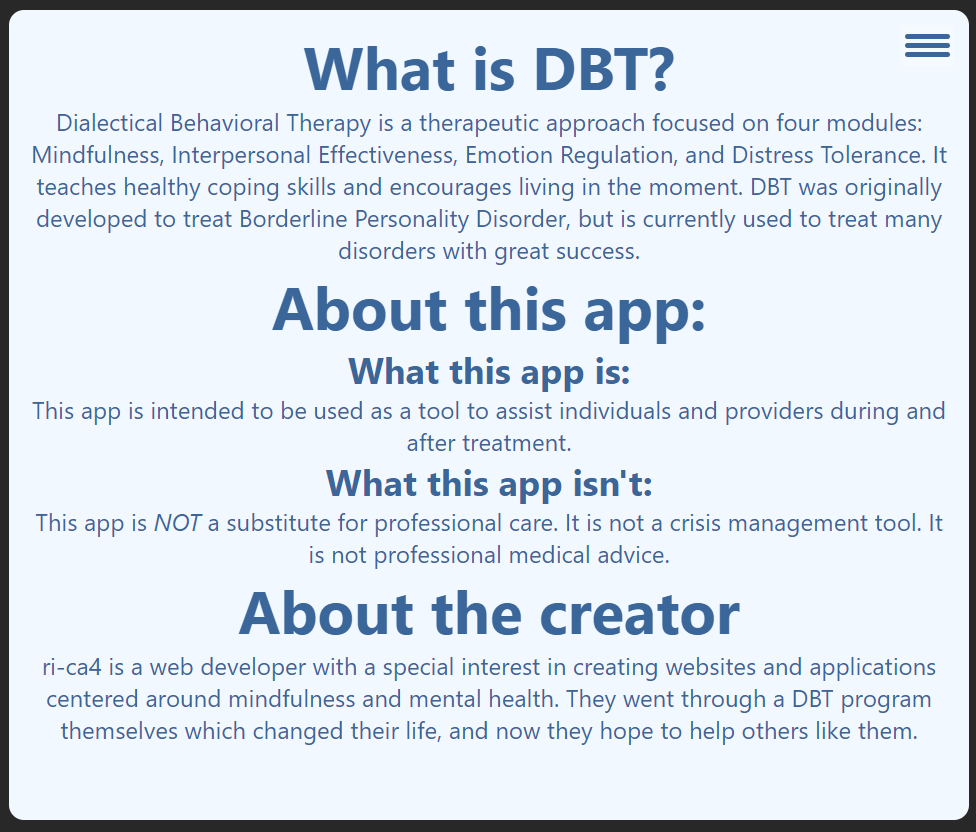
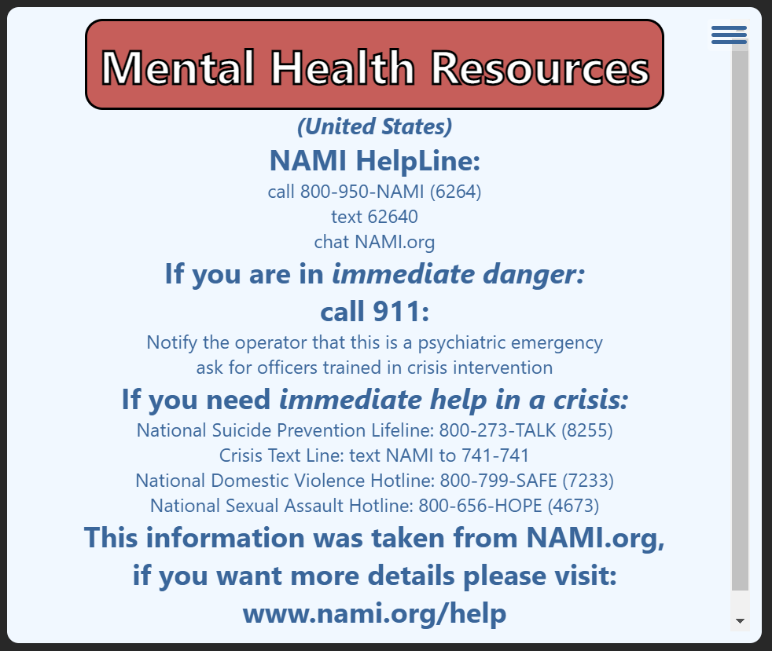

Skills Wiz: Development
Dialectical Behavoiral Therapy (DBT) is a therapeutic approach centered around mindfulness and developing healthy coping mechanisms.
Often, in the midst of distress, it can be challenging to determine which DBT skills will be helpful. When used alongside professional help, Skills Wiz can help with that decision. It provides fast, usable resources in times of distress, and reinforces DBT skills training.
The app was designed using a DBT worksheet (with permission from the creator of said worksheet) that suggests sets of skills for individuals to use based off their current distress level.
In designing Skills Wiz, my goal was to create an application that was simple and easy to navigate. The minimalistic design focuses on functionality, allowing users to quickly access references and resources in their times of need.
Transparency is important. I am not a mental health professional, and this application does not provide professional advice. It is meant to be a tool to aid patients and therapists, and is meant to be used along side professional treatment. The disclaimer that shows at the start of the app along with the information on the About page make that clear.
Resources are provided to help those in crisis reach out for help. A link to the page is provided when the user’s input is 75 or higher and the Distress Tolerance results are loaded.
Skills Wiz may only do one thing, but that simplicity makes it accessible and easy to use in the moments when skills practice is needed. My intention is to continue to improve the app and to start mobile development soon.